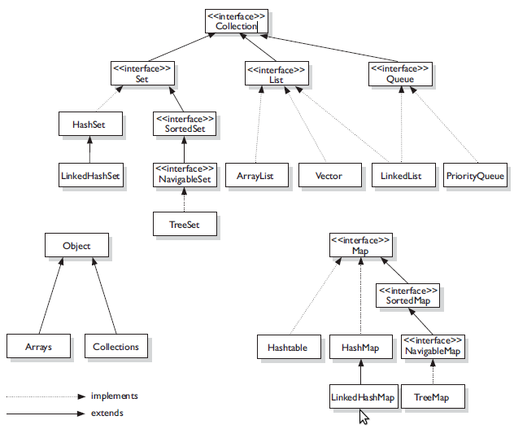
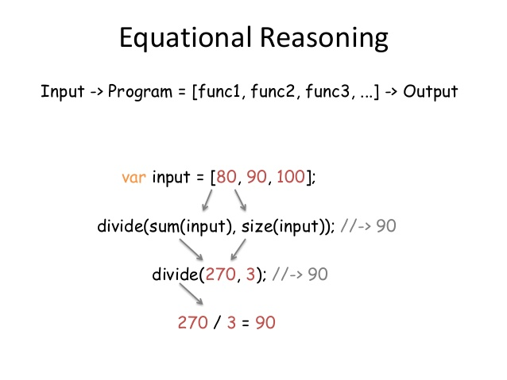

Annex 1:
Functional programming concepts
with Java & VAVR
#EYD
Juan Antonio Breña Moralv0.1.0
Who I am
|
|
Juan Antonio Breña Moral (40) Chapter Lead, Deejay & Mindstorms/STEAM teacher. Twitter | Github | Linkedin |
| Purpose: "Riding dragons with innovation & fun" | |
|
Quote: "Pressure makes diamonds." - George S. Patton Jr. |
|
Functional Concepts
- Eager vs Lazy
- Mutable vs Immutable
- Pure vs Impure functions
- Side effects
- List manipulation
- Equational reasoning
- Functional composition
- Referential Transparency
- Monads
- Effects
Eager vs Lazy
| Concept | Description |
|---|---|
| Lazy | Refers to the delaying of the evaluation of an operation until it is needed. |
| Eager | An operation is executed as soon as it is encountered. |
Mutable vs Immutable
Pure vs Impure functions
Characteristics of Pure Function:
- The return value of the pure functions solely depends on its arguments Hence, if you call the pure functions with the same set of arguments, you will always get the same return values.
- They do not have any side effects like network or database calls
- They do not modify the arguments which are passed to them
Side Effects

A side effect is any application state change that is observable outside the called function other than its return value.
Equational reasoning
Equational reasoning lets you transform consistently (based on mathematical functional equations) some functions into another ones
Functional composition

Functional composition
Function composition is a mechanism to combine simple functions to build more complicated ones.
The ability to easily compose functions encourages factoring (breaking apart) functions for maintainability and code reuse.
Referential Transparency
Referential transparency is generally defined as the fact that an expression, in a program, may be replaced by its value (or anything having the same value) without changing the result of the program.
Monads
A monad is just a monoid in the category of endofunctors.
A monad is a design pattern
A monad acts as a container that abstracts away those quirks in the computations, and let us focus more on what we want to do with the contained values.
Monads
Place a value into monadic context
- Haskell's Maybe: return / Just
- Scala's Option: Some
- Functional Java's Option: Option.some
- JDK8's Optional: Optional.of
Apply a function in monadic context
- Haskell's Maybe: >>= (aka bind)
- Scala's Option: flatMap
- Functional Java's Option: flatMap
- JDK8's Optional: flatMap
Effects
An effect is the thing a monad handles
- Optional is a monad that models the effect of optionality (of something being optional)
- CompletableFuture is a monad that models latency as an effect
- Try is a monad that models the effect of failures (manages exceptions as effects)
- Either is a monad that models the effect of failure and success